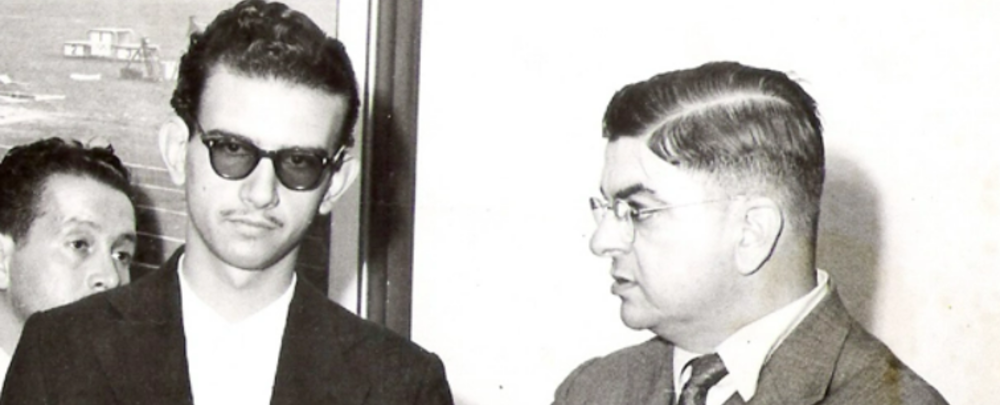
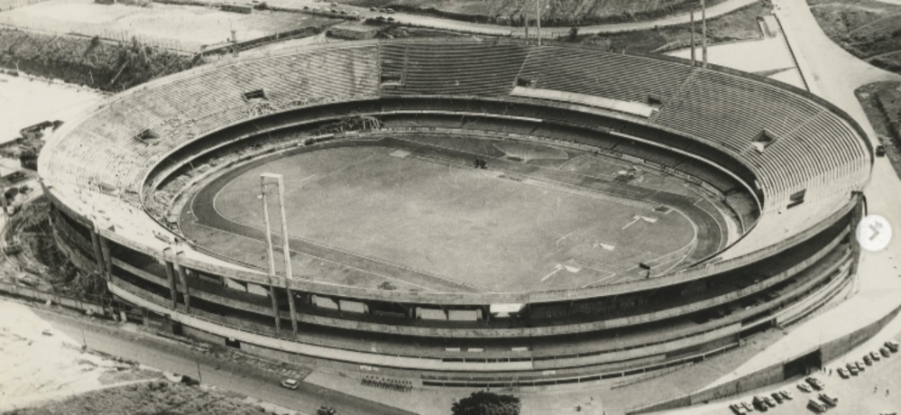

História por trás do nome
O Estádio Morumbi foi nomeado em homenagem a Cícero Pompeu de Toledo, que foi um dos maiores presidentes da história do São Paulo Futebol Clube, dirigindo o clube de 1947 a 1958. Ele foi uma das figuras centrais por trás da ideia e do início da construção de um estádio próprio para o clube. A obra, iniciada em 1952, só foi concluída em 1970, após sua morte em 1959, e o estádio foi batizado com seu nome em 1956 para homenagear seu empenho.
QUEM FOI CÍCERO POMPEU DE TOLEDO
Cícero Pompeu de Toledo foi um dirigente esportivo brasileiro, conhecido por ter sido presidente do São Paulo Futebol Clube durante os anos de 1947 a 1957. Sua gestão foi marcada por vitórias no Campeonato Paulista, e pelo grande legado da construção do estádio do clube, que leva seu nome, o Estádio Cícero Pompeu de Toledo. Ele faleceu em 1959, antes de ver o estádio ser concluído, mas é lembrado como um dos maiores presidentes da história do clube.

SEUS FEITOS PELO CLUBE
Construção do Estádio do Morumbi: Seu legado mais significativo foi a liderança na construção do Estádio Cícero Pompeu de Toledo, popularmente conhecido como Estádio do Morumbi. A construção do estádio, que é a casa do São Paulo FC, começou em 1952, durante sua gestão, e o nome oficial é uma homenagem a ele.
Gestão Vencedora: Como presidente do São Paulo FC, ele teve uma gestão de sucesso, que resultou na conquista de vários títulos do Campeonato Paulista nas décadas de 1940 e 1950.
Títulos Conquistados: Durante seu mandato, o clube venceu os Campeonatos Paulistas de 1948, 1949, 1953 e 1957.
Eternização da Imagem: Sua contribuição para o clube é tão valorizada que sua imagem foi eternizada em uma estátua, localizada em frente ao portão principal do estádio do Morumbi.

Atualmente, o Morumbis é o terceiro maior estádio do Brasil, sendo também o maior estádio do estado de São Paulo e o maior estádio particular brasileiro. Projetado pelo arquiteto João Batista Vilanova Artigas, é considerado um patrimônio arquitetônico representativo da Escola Paulista, tendo sido tombado em 2018 pelo Conselho Municipal de Preservação do Patrimônio Histórico, Cultural e Ambiental da Cidade de São Paulo (CONPRESP).